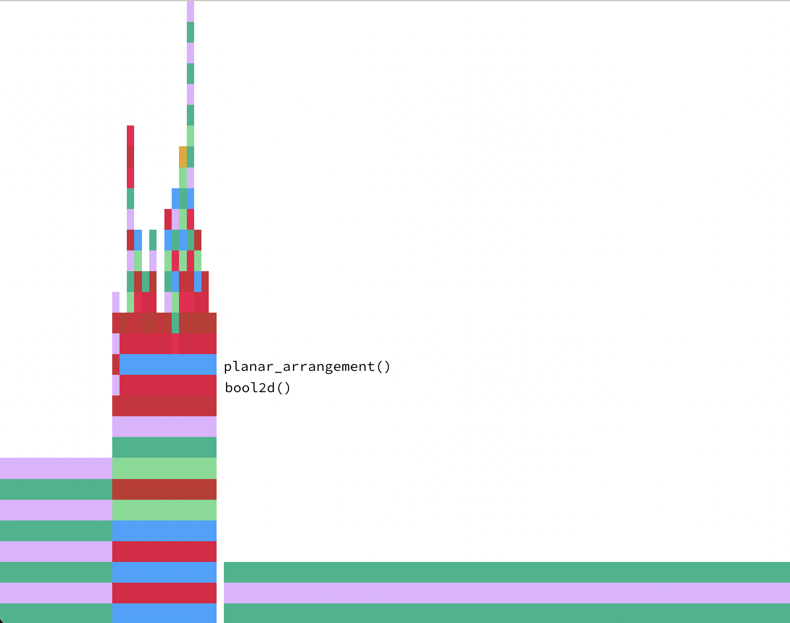
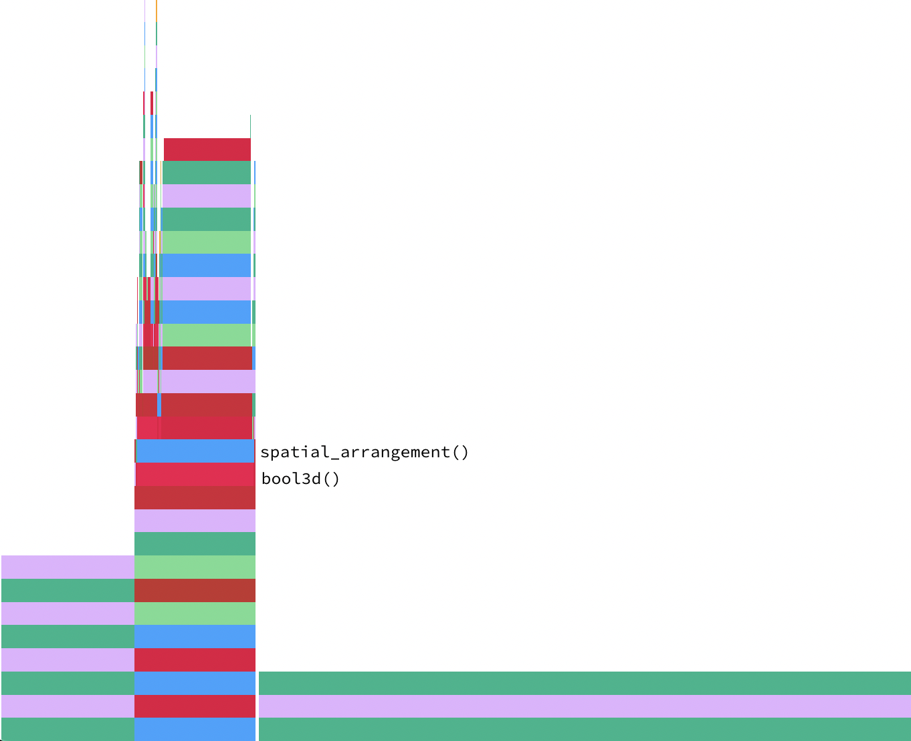

Prestazioni
Durante lo studio definitivo del progetto, sono stati eseguiti dei benchamrk, tramite la macro @btime del package BenchmarkTools, per valutare le prestazioni e osservare i benifici apportati alle varie porzioni di codice.
Come sperato, le modifiche introdotte hanno migliorato complessivamente le prestazioni rispetto la versione originale, riducendo il tempo di esecuzione di ogni funzione di cui il progetto è composto e il numero di allocazioni in memoria.
E' da notare come le funzioni bool2d() e bool3d() siano rispettivamente influenzate da planar_arrangement()e da spatial_arrangement(). I tempi di esecuzione di quest'ultime, infatti, impattono fortemente sulle prestazioni complessive del codice. Le figure di seguito, generate automaticamente dal package ProfileView, mostrano graficamente quanto espresso.
 
Errori noti
Nell’esempio sottostante (due cubi con spigolo unitario e con una faccia in comune) la funzione Lar.coboundary_1() non funziona correttamente e restituisce un errore sul file interface.jl presente in un altro progetto.
import LinearAlgebraicRepresentation as Lar
import ViewerGL as GL
using Base.Threads, SparseArrays
n, m, p = 1, 1, 1
V, (VV, EV, FV, CV) = Lar.cuboidGrid([n, m, p], true)
cube = V, FV, EV
assembly = Lar.Struct([
Lar.Struct([Lar.t(0, 0, 0), Lar.r(0, 0, 0), cube])
Lar.Struct([Lar.t(0, 0, 1), Lar.r(0, 0, 0), cube])
])
V, FV = Lar.struct2lar(assembly)
meshes = []
for k = 1:length(FV)
color = GL.MayaColors[k%12+1] - (rand(Float64, 4) * 0.1)
push!(meshes, GL.GLGrid(V, [FV[k]], color, 0.9))
end
GL.VIEW(meshes);
W, (copEV, copFE, copCF), boolmatrix = LARgenerators.bool3d(assembly)